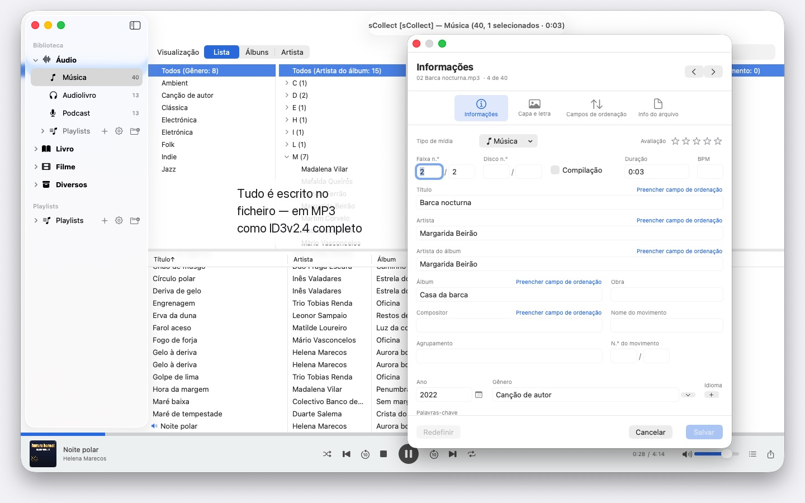
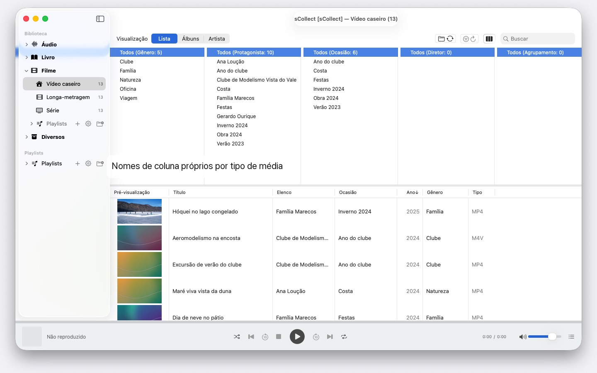

sCollect
Música, filmes, livros e mais
Em breve · outubro de 2026Milhares de artistas, vários Mac, qualquer macOS a partir do 14: o sCollect organiza música, filmes e livros e grava os seus dados nos ficheiros. Sem conta, sem nuvem.


O sCollect é uma biblioteca para tudo aquilo que se pode colecionar: música, filmes, vídeos caseiros, audiolivros, podcasts e e-books — e também para coisas que não são ficheiros multimédia, como moedas ou selos, fotografados e descritos. Os nomes das categorias define-os a seu gosto.
A diferença em relação a um catálogo vulgar: o sCollect volta a escrever. Aquilo que introduz no editor não fica apenas na base de dados, vai para os metadados do próprio ficheiro. Deste modo, o seu trabalho mantém-se mesmo que um dia deixe de usar o sCollect.
ARRUMAÇÃO, SEM TER DE A FAZER
Ao importar, o sCollect põe cada ficheiro no seu lugar — por tipo de mídia, artista, álbum ou data, consoante o que tiver definido. Cada tipo de mídia pode ter a sua própria pasta, mesmo noutro disco: os filmes no disco externo grande, a música no disco interno rápido.
Quem prefere deixar a coleção onde está, vincula-a em vez de a copiar. Os ficheiros vinculados nunca são tocados.
PARA FOTOGRAFIAS E FILMAGENS
Quem fotografa ou filma arquiva um tipo de mídia por data: ao importar, os ficheiros vão para pastas de ano e mês, e o nome do ficheiro traz a data de captura, lida do próprio ficheiro — nos vídeos, com um aviso quando a câmara omite o fuso horário. Os prefixos de câmara como IMG_ desaparecem do título, se assim o desejar, é acrescentada uma data ISO, e a lista e o disco ordenam da mesma forma.
METADADOS QUE CHEGAM MESMO AO FICHEIRO
Um editor para itens individuais, um segundo para muitos de uma só vez. Ambos escrevem no formato que o ficheiro traz consigo — ID3v2.4 em MP3, a estrutura de tags de MP4 e M4A, comentários Vorbis em FLAC e OGG, os blocos de texto de AIFF e WAV, DSF em gravações DSD, EXIF, IPTC e XMP em imagens.
Onde um formato não tem campo para alguma coisa, ou um ficheiro está protegido contra cópia, o sCollect coloca ao lado um ficheiro de acompanhamento, em vez de perder a indicação. Se o ficheiro divergir da biblioteca, o editor di-lo antes de sobrescrever seja o que for.
O QUE ENCURTA O TRABALHO
- Encontrar/Substituir em todos os campos, com pré-visualização antes da alteração
- Encontrar duplicatas em toda a categoria, com um juízo compreensível sobre qual das versões é a melhor
- Um navegador de colunas como o de um programa de música, com seleção múltipla por coluna. Milhares de artistas sem listas intermináveis: agrupados pela inicial, A, AB, ABB – três cliques até ao destino
- Reprodução de áudio e vídeo, com playlists e posição de reprodução memorizada
ENCONTRAR OS FICHEIROS EM FALTA, EM VEZ DE ANDAR À PROCURA DELES
Uma passagem assinala cada entrada cujo ficheiro já não existe e guarda o resultado. Uma vista própria mostra apenas essas entradas e vai riscando aquilo que voltou a vincular.
VÁRIOS COMPUTADORES, UMA COLEÇÃO
Uma biblioteca pode registar cópias. Aquilo que altera no acervo principal é levado depois para todas as cópias acessíveis, ficheiros e tags incluídos. Se uma cópia estiver offline, a alteração fica pendente e é feita assim que ela voltar.
Não importa que macOS corra em cada Mac: um com macOS 14 e outro com macOS 26 leem a mesma coleção, e nenhuma atualização do sistema a converte. Mas as cópias não são uma cópia de segurança.
IMPORTAÇÃO E EXPORTAÇÃO
As coleções existentes entram através do XML do iTunes, com avaliações e playlists. A saída faz-se como sCollect-XML — sem perdas, para mudanças e para cópia de segurança —, como playlist para o Apple Music ou como iTunes-XML.
NO SEU MAC, E SÓ AÍ
Sem contas, sem nuvem, sem análises, sem publicidade. O sCollect trabalha exclusivamente com as pastas que lhe indicar.
Por isso, o sCollect também não importa CD nem vai buscar informações das faixas à Internet — o Apple Music já faz ambas as coisas. Importe aí o CD em AAC, Apple Lossless ou MP3, e os ficheiros trazem as suas informações para o sCollect. Assim, nenhum serviço fica a saber o que coleciona nem como o organiza.
Em 25 idiomas de livre escolha, cada um com ajuda completa.
- Requer macOS 14 ou posterior
- 25 idiomas
- Suporte: SwiftAppsBavaria@gmx.net
Mais aplicações
SwiftRename
Mudar o nome de ficheiros em lote – pela data da câmara, com numeração sequencial ou logo organizados em pastas de ano e mês.
sVectorLift
Abrir, ver e guardar clipart vetorial antigo como SVG – CorelDRAW, Windows Metafile e CGM.
sName2Date
Escrever a data do nome do ficheiro como data de captura em fotografias, filmes e gravações de áudio – para que um ficheiro como IMG_20240115_103000.jpg fique corretamente ordenado em qualquer gestor de fotografias. Os dados de imagem e de filme ficam intactos; os PDF e outros ficheiros sem data de captura recebem as datas do ficheiro e, se desejado, também o nome passa para a notação ISO. Árvores de pastas inteiras de uma só vez, e cada operação pode ser anulada com ⌘Z.
sName2Date Lite
A edição para um ficheiro de cada vez: escrever a data do nome do ficheiro como data de captura numa fotografia, num filme ou numa gravação de áudio, defini-la manualmente, passar o nome para a notação ISO e anular tudo com ⌘Z – as mesmas capacidades do sName2Date, só que sem pastas inteiras.
sCollectPlay
O leitor da mediateca: reproduzir música, filmes, audiolivros e podcasts simplesmente de uma pasta, de um XML do iTunes ou de uma mediateca do sCollect – sem alterar nada nas tags dos ficheiros. Com listas de reprodução, faixas de áudio e de legendas e, nos filmes, câmara lenta e avanço imagem a imagem. O que o macOS não reproduz sozinho, como MKV, AVI ou DSD, é enviado para um leitor externo.
sCollectPlay Lite
A edição simplificada do sCollectPlay: abrir simplesmente uma pasta, um XML do iTunes ou uma mediateca do sCollect e reproduzir daí música, filmes, audiolivros e podcasts – com listas de reprodução, faixas de áudio e de legendas, câmara lenta e avanço imagem a imagem. Uma fonte por sessão; o navegador de colunas, as listas de reprodução próprias e as fontes usadas recentemente ficam reservados à versão completa.
sBikeBridge
Analisar voltas de bicicleta sem as carregar num portal: importar ficheiros FIT de qualquer ciclocomputador que grave neste formato, bem como GPX e TCX. As voltas ficam numa biblioteca própria no Mac – com mapa, potência e frequência cardíaca, fotografias e notas; os duplicados são detetados na importação. Indicadores por ano ou mês e filtros por distância, desnível acumulado e duração tornam as voltas comparáveis. Se desejado, o mapa também está disponível offline.